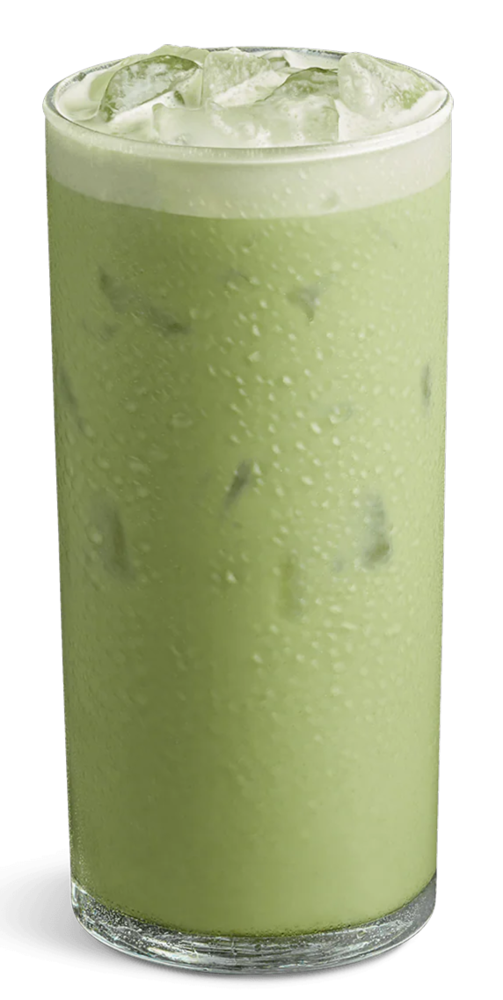

Overview
Matcha is a Japanese Uji tea that originated from Tang dynasty China. Known for its bright green color and umami, it is a finely-ground powder made from special shade-grown tea leaves.

Traditionally, matcha is prepared using two methods: koicha, or “thick tea,” is stronger, more concentrated, and reserved for formal tea ceremonies; usucha, or “thin tea,” tends to be lighter and common for daily drinking. Today, matcha has expanded beyond its traditional roots and become popular among drinks and desserts globally.